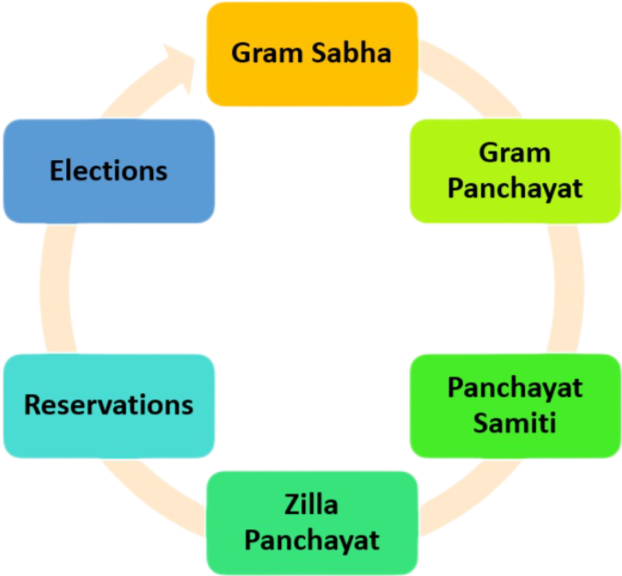

The Panchayati Raj system is a system of local self-government in
rural India. It is a system of councils that are responsible for the
economic development, social justice, and implementation of
government schemes in their areas.

The main features of the Panchayati Raj system
Gram Sabha: The foundation of the Panchayati Raj system,
the Gram Sabha is a permanent body of people registered to vote in
a village.
Gram Panchayat: The first level of governance in rural
areas, the Gram Panchayat is the main executive council of the
Gram Sabha.
Panchayat Samiti: The block level council.
Zilla Panchayat: The district level council.
Reservations: Seats are reserved for women, Scheduled
Castes, and Scheduled Tribes.
Elections: Panchayat elections are held every five years.